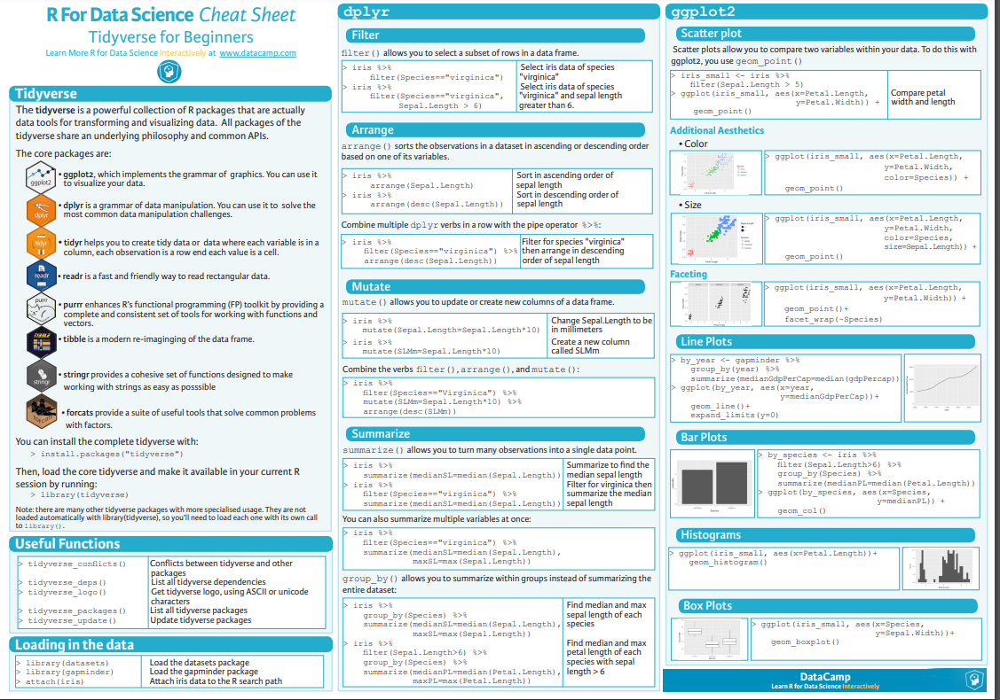
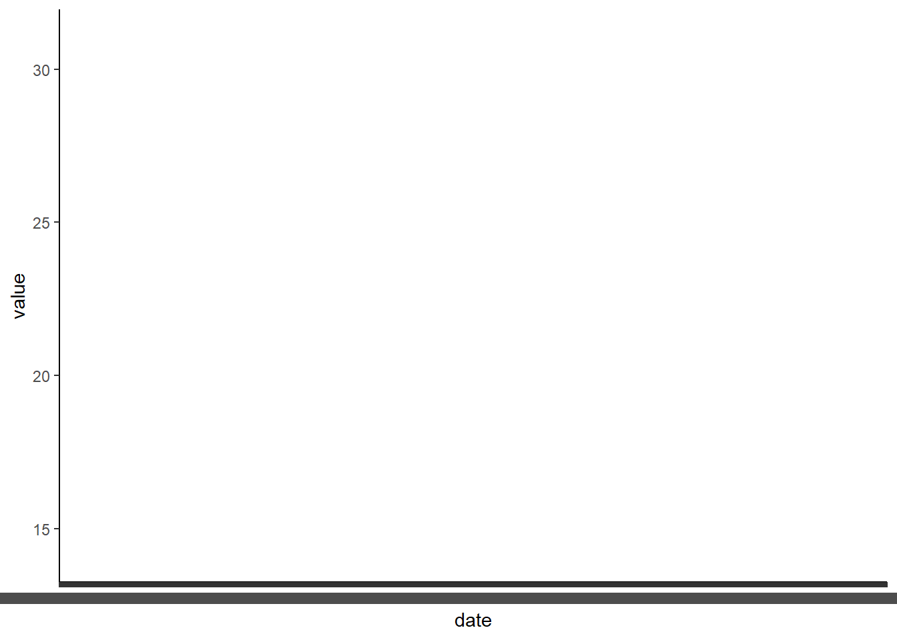
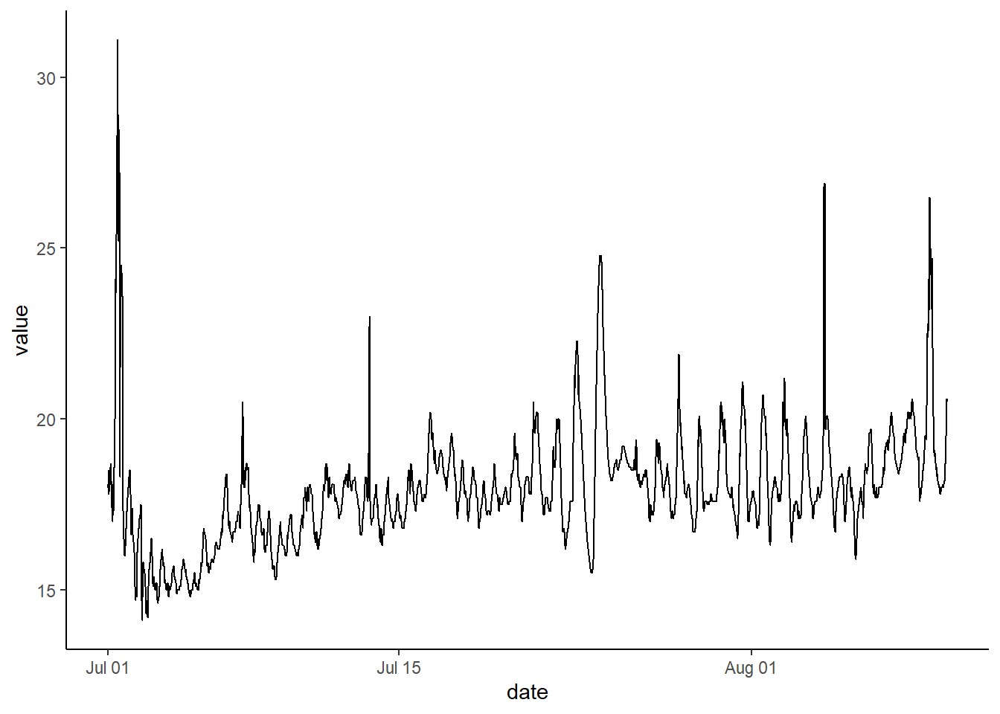

library(tidyverse)Lab 1: Intro to Data Wrangling
Learning Objectives
In this tutorial we will learn:
1.) Basic data wrangling functions in the tidyverse framework
2.) Pivoting data
3.) How to deal with date / time formats in R
1.) Introduction to the Tidyverse
The Tidyverse is a collection of R packages that can be used together for many different data science practices. They share syntax and are very versatile. For most users, the Tidyverse provides a structure of “best practices” that will allow a user to do just about anything with data.
We can load the Tidyverse as a single package in R:
The tidyverse package contains the following packages: 1.) ggplot2: the best graphing package in R
2.) dplyr: most of our data wrangling tools come from here
3.) tidyr: tools for data tidying (cleaning, reshaping)
4.) readr: tools for reading in different types of data – this is where the read_csv() function comes from
5.) purrr: tools for working with functions and vectors (useful but likely not right away for beginners)
6.) stringr: functions to help us work with strings (like sentences, paragraphs, lists, etc)
7.) forcats: “for categories” - makes working with factors (categorical data) easier!
Learn more about the Tidyverse
This section contains some worked examples of Tidyverse best practices for data manipulation. If you just want a quick refresher, you can take a look at the cheat sheet below!

2.) Prepare data for wrangling
We can mess with a few data sets that are built into R or into R packages.
A common one is mtcars, which is part of base R (attributes of a bunch of cars)
head(mtcars) mpg cyl disp hp drat wt qsec vs am gear carb
Mazda RX4 21.0 6 160 110 3.90 2.620 16.46 0 1 4 4
Mazda RX4 Wag 21.0 6 160 110 3.90 2.875 17.02 0 1 4 4
Datsun 710 22.8 4 108 93 3.85 2.320 18.61 1 1 4 1
Hornet 4 Drive 21.4 6 258 110 3.08 3.215 19.44 1 0 3 1
Hornet Sportabout 18.7 8 360 175 3.15 3.440 17.02 0 0 3 2
Valiant 18.1 6 225 105 2.76 3.460 20.22 1 0 3 1Another fun one is CO2, which is also part of base R (CO2 uptake from different plants). Note: co2 (no caps) is also a dataset in R. It’s just the CO2 concentration at Maona Loa observatory every year (as a list).
head(CO2) Plant Type Treatment conc uptake
1 Qn1 Quebec nonchilled 95 16.0
2 Qn1 Quebec nonchilled 175 30.4
3 Qn1 Quebec nonchilled 250 34.8
4 Qn1 Quebec nonchilled 350 37.2
5 Qn1 Quebec nonchilled 500 35.3
6 Qn1 Quebec nonchilled 675 39.2You are welcome to use these to practice with or you can choose from any of the datasets in the ‘datasets’ or ‘MASS’ packages (you have to load the package to get the datasets).
You can also load in your own data or pick something from online, as we learned how to do last time.
Let’s stick with what we know for now– I will use the penguins data from the palmerpenguins package
library(palmerpenguins)
penguins# A tibble: 344 × 8
species island bill_length_mm bill_depth_mm flipper_length_mm body_mass_g
<fct> <fct> <dbl> <dbl> <int> <int>
1 Adelie Torgersen 39.1 18.7 181 3750
2 Adelie Torgersen 39.5 17.4 186 3800
3 Adelie Torgersen 40.3 18 195 3250
4 Adelie Torgersen NA NA NA NA
5 Adelie Torgersen 36.7 19.3 193 3450
6 Adelie Torgersen 39.3 20.6 190 3650
7 Adelie Torgersen 38.9 17.8 181 3625
8 Adelie Torgersen 39.2 19.6 195 4675
9 Adelie Torgersen 34.1 18.1 193 3475
10 Adelie Torgersen 42 20.2 190 4250
# ℹ 334 more rows
# ℹ 2 more variables: sex <fct>, year <int>add the dataframe to our environment As you learned in the Rstudio basics tutorial above, one of the four main panels of the RStudio window contains the Environment tab. In this tab, we can see data that are stored locally in our session of R. While penguins is pre-loaded in R, it is nice to make a local copy so we can modify it easily.
Here’s how we do that:
penguins<-penguins Here, the name of the new dataframe we want in our environment is to the left of the arrow and the name of the object we are calling is to the right. In simpler terms, we are defining a new dataframe called penguins (or any name we want) and it is defined as just an exact copy of penguins (the object that is already defined within palmerpenguins. This is the simplest example – we will quickly move on to more complex things. You will see that when you run this the dataframe ‘penguins’ appears in the local environment. You can call your local file anything you want, it does not need to be an exact copy of the orignal name! Choose names that are meaningful to you, but keep the names short and avoid spaces and other special characters as much as possible.
3.) Tidyverse data wrangling
Let’s look at penguins
head(penguins)# A tibble: 6 × 8
species island bill_length_mm bill_depth_mm flipper_length_mm body_mass_g
<fct> <fct> <dbl> <dbl> <int> <int>
1 Adelie Torgersen 39.1 18.7 181 3750
2 Adelie Torgersen 39.5 17.4 186 3800
3 Adelie Torgersen 40.3 18 195 3250
4 Adelie Torgersen NA NA NA NA
5 Adelie Torgersen 36.7 19.3 193 3450
6 Adelie Torgersen 39.3 20.6 190 3650
# ℹ 2 more variables: sex <fct>, year <int>Now let’s say we only really care about species and bill length. We can select those columns to keep and remove the rest of the columns because they are just clutter at this point. There are two ways we can do this: 1.) Select the columns we want to keep 2.) Select the columns we want to remove
Here are two ways to do that:
Base R example For those with some coding experience you may like this method as this syntax is common in other coding languages
Step 1.) Count the column numbers. Column 1 is the left most column. Remember we can use ncol() to count the total number of columns (useful when we have a huge number of columns)
ncol(penguins) # we have 8 columns[1] 8Species is column 1 and bill length is column 3. Those are the only columns we want!
Step 2.) Select columns we want to keep using bracket syntax. Here we wil use this basic syntax: df[rows, columns] We can input the rows and/or columns we want inside our brackets. If we want more than 1 row or column we will need to use a ‘c()’ for concatenate (combine). To select just species and bill length we would do the following:
head(penguins[,c(1,3)]) #Selecting NO specific rows and 2 columns (numbers 1 and 3)# A tibble: 6 × 2
species bill_length_mm
<fct> <dbl>
1 Adelie 39.1
2 Adelie 39.5
3 Adelie 40.3
4 Adelie NA
5 Adelie 36.7
6 Adelie 39.3IMPORTANT When we do this kind of manipulation it is super helpful to NAME the output. In the above example I didn’t do that. If I don’t name the output I cannot easily call it later. If I do name it, I can use it later and see it in my ‘Environment’ tab. So, I should do this:
pens<-penguins[,c(1,3)]
head(pens)# A tibble: 6 × 2
species bill_length_mm
<fct> <dbl>
1 Adelie 39.1
2 Adelie 39.5
3 Adelie 40.3
4 Adelie NA
5 Adelie 36.7
6 Adelie 39.3Now, here’s how you do the same selection step by removing the columns you DO NOT want.
pens2<-penguins[,-c(2,4:8)] #NOTE that ':' is just shorthand for all columns between 4 and 8. I could also use -c(2,4,5,6,7,8)
head(pens2)# A tibble: 6 × 2
species bill_length_mm
<fct> <dbl>
1 Adelie 39.1
2 Adelie 39.5
3 Adelie 40.3
4 Adelie NA
5 Adelie 36.7
6 Adelie 39.3Tidyverse example (select())
Perhaps that example above was a little confusing? This is why we like Tidyverse! We can do the same thing using the select() function in Tidyverse and it is easier!
I still want just species and bill length. Here’s how I select them:
head(select(penguins, species, bill_length_mm))# A tibble: 6 × 2
species bill_length_mm
<fct> <dbl>
1 Adelie 39.1
2 Adelie 39.5
3 Adelie 40.3
4 Adelie NA
5 Adelie 36.7
6 Adelie 39.3EASY. Don’t forget to name the output for use later :)
Like this:
shortpen<-select(penguins, species, bill_length_mm)
head(shortpen)# A tibble: 6 × 2
species bill_length_mm
<fct> <dbl>
1 Adelie 39.1
2 Adelie 39.5
3 Adelie 40.3
4 Adelie NA
5 Adelie 36.7
6 Adelie 39.3Sometimes we only want to look at data from a subset of the data frame
For example, maybe we only want to examine data from chinstrap penguins in the penguins data. OR perhaps we only care about 4 cylinder cars in mtcars. We can filter out the data we don’t want easily using Tidyverse (filter) or base R (subset)
Tidyverse example - Using filter()
Let’s go ahead and filter the penguins data to only include chinstraps and the mtcars data to only include 4 cylinder cars
The syntax for filter is: filter(df, column =><== number or factor)
#filter penguins to only contain chinstrap
chins<-filter(penguins, species=='Chinstrap')
head(chins)# A tibble: 6 × 8
species island bill_length_mm bill_depth_mm flipper_length_mm body_mass_g
<fct> <fct> <dbl> <dbl> <int> <int>
1 Chinstrap Dream 46.5 17.9 192 3500
2 Chinstrap Dream 50 19.5 196 3900
3 Chinstrap Dream 51.3 19.2 193 3650
4 Chinstrap Dream 45.4 18.7 188 3525
5 Chinstrap Dream 52.7 19.8 197 3725
6 Chinstrap Dream 45.2 17.8 198 3950
# ℹ 2 more variables: sex <fct>, year <int>#confirm that we only have chinstraps
chins$species [1] Chinstrap Chinstrap Chinstrap Chinstrap Chinstrap Chinstrap Chinstrap
[8] Chinstrap Chinstrap Chinstrap Chinstrap Chinstrap Chinstrap Chinstrap
[15] Chinstrap Chinstrap Chinstrap Chinstrap Chinstrap Chinstrap Chinstrap
[22] Chinstrap Chinstrap Chinstrap Chinstrap Chinstrap Chinstrap Chinstrap
[29] Chinstrap Chinstrap Chinstrap Chinstrap Chinstrap Chinstrap Chinstrap
[36] Chinstrap Chinstrap Chinstrap Chinstrap Chinstrap Chinstrap Chinstrap
[43] Chinstrap Chinstrap Chinstrap Chinstrap Chinstrap Chinstrap Chinstrap
[50] Chinstrap Chinstrap Chinstrap Chinstrap Chinstrap Chinstrap Chinstrap
[57] Chinstrap Chinstrap Chinstrap Chinstrap Chinstrap Chinstrap Chinstrap
[64] Chinstrap Chinstrap Chinstrap Chinstrap Chinstrap
Levels: Adelie Chinstrap GentooNow for mtcars…
#filter mtcars to only contain 4 cylinder cars
cars4cyl<-filter(mtcars, cyl == "4")
head(cars4cyl) mpg cyl disp hp drat wt qsec vs am gear carb
Datsun 710 22.8 4 108.0 93 3.85 2.320 18.61 1 1 4 1
Merc 240D 24.4 4 146.7 62 3.69 3.190 20.00 1 0 4 2
Merc 230 22.8 4 140.8 95 3.92 3.150 22.90 1 0 4 2
Fiat 128 32.4 4 78.7 66 4.08 2.200 19.47 1 1 4 1
Honda Civic 30.4 4 75.7 52 4.93 1.615 18.52 1 1 4 2
Toyota Corolla 33.9 4 71.1 65 4.22 1.835 19.90 1 1 4 1#confirm it worked
str(cars4cyl) #str shows us the observations and variables in each column'data.frame': 11 obs. of 11 variables:
$ mpg : num 22.8 24.4 22.8 32.4 30.4 33.9 21.5 27.3 26 30.4 ...
$ cyl : num 4 4 4 4 4 4 4 4 4 4 ...
$ disp: num 108 146.7 140.8 78.7 75.7 ...
$ hp : num 93 62 95 66 52 65 97 66 91 113 ...
$ drat: num 3.85 3.69 3.92 4.08 4.93 4.22 3.7 4.08 4.43 3.77 ...
$ wt : num 2.32 3.19 3.15 2.2 1.61 ...
$ qsec: num 18.6 20 22.9 19.5 18.5 ...
$ vs : num 1 1 1 1 1 1 1 1 0 1 ...
$ am : num 1 0 0 1 1 1 0 1 1 1 ...
$ gear: num 4 4 4 4 4 4 3 4 5 5 ...
$ carb: num 1 2 2 1 2 1 1 1 2 2 ...cars4cyl$cyl #shows us only the observations in the cyl column! [1] 4 4 4 4 4 4 4 4 4 4 4Base R example (subset) In this case, the subset() function that is in base R works almost exactly like the filter() function. You can essentially use them interchangably.
#subset mtcars to include only 4 cylinder cars
cars4cyl2.0<-subset(mtcars, cyl=='4')
cars4cyl2.0 mpg cyl disp hp drat wt qsec vs am gear carb
Datsun 710 22.8 4 108.0 93 3.85 2.320 18.61 1 1 4 1
Merc 240D 24.4 4 146.7 62 3.69 3.190 20.00 1 0 4 2
Merc 230 22.8 4 140.8 95 3.92 3.150 22.90 1 0 4 2
Fiat 128 32.4 4 78.7 66 4.08 2.200 19.47 1 1 4 1
Honda Civic 30.4 4 75.7 52 4.93 1.615 18.52 1 1 4 2
Toyota Corolla 33.9 4 71.1 65 4.22 1.835 19.90 1 1 4 1
Toyota Corona 21.5 4 120.1 97 3.70 2.465 20.01 1 0 3 1
Fiat X1-9 27.3 4 79.0 66 4.08 1.935 18.90 1 1 4 1
Porsche 914-2 26.0 4 120.3 91 4.43 2.140 16.70 0 1 5 2
Lotus Europa 30.4 4 95.1 113 3.77 1.513 16.90 1 1 5 2
Volvo 142E 21.4 4 121.0 109 4.11 2.780 18.60 1 1 4 2Adding a new column Sometimes we may want to do some math on a column (or a series of columns). Maybe we want to calculate a ratio, volume, or area. Maybe we just want to scale a variable by taking the log or changing it from cm to mm. We can do all of this with the mutate() function in Tidyverse!
#convert bill length to cm (and make a new column)
head(penguins)# A tibble: 6 × 8
species island bill_length_mm bill_depth_mm flipper_length_mm body_mass_g
<fct> <fct> <dbl> <dbl> <int> <int>
1 Adelie Torgersen 39.1 18.7 181 3750
2 Adelie Torgersen 39.5 17.4 186 3800
3 Adelie Torgersen 40.3 18 195 3250
4 Adelie Torgersen NA NA NA NA
5 Adelie Torgersen 36.7 19.3 193 3450
6 Adelie Torgersen 39.3 20.6 190 3650
# ℹ 2 more variables: sex <fct>, year <int>mutpen<-(mutate(penguins, bill_length_cm=bill_length_mm/10))
head(mutpen) # A tibble: 6 × 9
species island bill_length_mm bill_depth_mm flipper_length_mm body_mass_g
<fct> <fct> <dbl> <dbl> <int> <int>
1 Adelie Torgersen 39.1 18.7 181 3750
2 Adelie Torgersen 39.5 17.4 186 3800
3 Adelie Torgersen 40.3 18 195 3250
4 Adelie Torgersen NA NA NA NA
5 Adelie Torgersen 36.7 19.3 193 3450
6 Adelie Torgersen 39.3 20.6 190 3650
# ℹ 3 more variables: sex <fct>, year <int>, bill_length_cm <dbl>Change existing column The code above makes a new column in which bill length in cm is added as a new column to the data frame. We could have also just done the math in the original column if we wanted. That would look like this:
head(penguins)# A tibble: 6 × 8
species island bill_length_mm bill_depth_mm flipper_length_mm body_mass_g
<fct> <fct> <dbl> <dbl> <int> <int>
1 Adelie Torgersen 39.1 18.7 181 3750
2 Adelie Torgersen 39.5 17.4 186 3800
3 Adelie Torgersen 40.3 18 195 3250
4 Adelie Torgersen NA NA NA NA
5 Adelie Torgersen 36.7 19.3 193 3450
6 Adelie Torgersen 39.3 20.6 190 3650
# ℹ 2 more variables: sex <fct>, year <int>mutpen<-(mutate(penguins, bill_length_mm=bill_length_mm/10))
head(mutpen) # A tibble: 6 × 8
species island bill_length_mm bill_depth_mm flipper_length_mm body_mass_g
<fct> <fct> <dbl> <dbl> <int> <int>
1 Adelie Torgersen 3.91 18.7 181 3750
2 Adelie Torgersen 3.95 17.4 186 3800
3 Adelie Torgersen 4.03 18 195 3250
4 Adelie Torgersen NA NA NA NA
5 Adelie Torgersen 3.67 19.3 193 3450
6 Adelie Torgersen 3.93 20.6 190 3650
# ℹ 2 more variables: sex <fct>, year <int>NOTE This is misleading because now the values in bill_length_mm are in cm. Thus, it was better to just make a new column in this case. But you don’t have to make a new column every time if you would prefer not to. Just be careful.
Column math in Base R Column manipulation is easy enough in base R as well. We can do the same thing we did above without Tidyverse like this:
penguins$bill_length_cm = penguins$bill_length_mm /10
head(penguins)# A tibble: 6 × 9
species island bill_length_mm bill_depth_mm flipper_length_mm body_mass_g
<fct> <fct> <dbl> <dbl> <int> <int>
1 Adelie Torgersen 39.1 18.7 181 3750
2 Adelie Torgersen 39.5 17.4 186 3800
3 Adelie Torgersen 40.3 18 195 3250
4 Adelie Torgersen NA NA NA NA
5 Adelie Torgersen 36.7 19.3 193 3450
6 Adelie Torgersen 39.3 20.6 190 3650
# ℹ 3 more variables: sex <fct>, year <int>, bill_length_cm <dbl>‘Pivoting’ data means changing the format of the data. Tidyverse and ggplot in particular tend to like data in ‘long’ format. Long format means few columns and many rows. Wide format is the opposite- many columns and fewer rows.
Wide format is usually how the human brain organizes data. For example, a spreadsheet in which every species is in its own column is wide format. You might take this sheet to the field and record present/absence or count of each species at each site or something. This is great but it might be easier for us to calculate averages or do group based analysis in R if we have a column called ‘species’ in which every single species observation is a row. This leads to A LOT of repeated categorical variables (site, date, etc), which is fine.
Example of Long Format The built in dataset ‘fish_encounters’ is a simple example of long format data. Penguins, iris, and others are also in long format but are more complex
head(fish_encounters) # here we see 3 columns that track each fish (column 1) across MANY stations (column 2) # A tibble: 6 × 3
fish station seen
<fct> <fct> <int>
1 4842 Release 1
2 4842 I80_1 1
3 4842 Lisbon 1
4 4842 Rstr 1
5 4842 Base_TD 1
6 4842 BCE 1Converting from long to wide using pivot_wider (Tidyverse) Although we know that long format is preferred for working in Tidyverse and doing graphing and data analysis in R, we sometimes do want data to be in wide format. There are certain functions and operations that may require wide format. This is also the format that we are most likely to use in the field. So, let’s convert fish_encounters back to what it likely was when the data were recorded in the field…
#penguins long to wide using pivot_wider
widefish<-fish_encounters %>%
pivot_wider(names_from= station, values_from = seen)
head(widefish)# A tibble: 6 × 12
fish Release I80_1 Lisbon Rstr Base_TD BCE BCW BCE2 BCW2 MAE MAW
<fct> <int> <int> <int> <int> <int> <int> <int> <int> <int> <int> <int>
1 4842 1 1 1 1 1 1 1 1 1 1 1
2 4843 1 1 1 1 1 1 1 1 1 1 1
3 4844 1 1 1 1 1 1 1 1 1 1 1
4 4845 1 1 1 1 1 NA NA NA NA NA NA
5 4847 1 1 1 NA NA NA NA NA NA NA NA
6 4848 1 1 1 1 NA NA NA NA NA NA NAThe resulting data frame above is a wide version of the orignal in which each station now has its own column. This is likely how we would record the data in the field!
Example of Wide Format Data Let’s just use widefish for this since we just made it into wide format :)
head(widefish)# A tibble: 6 × 12
fish Release I80_1 Lisbon Rstr Base_TD BCE BCW BCE2 BCW2 MAE MAW
<fct> <int> <int> <int> <int> <int> <int> <int> <int> <int> <int> <int>
1 4842 1 1 1 1 1 1 1 1 1 1 1
2 4843 1 1 1 1 1 1 1 1 1 1 1
3 4844 1 1 1 1 1 1 1 1 1 1 1
4 4845 1 1 1 1 1 NA NA NA NA NA NA
5 4847 1 1 1 NA NA NA NA NA NA NA NA
6 4848 1 1 1 1 NA NA NA NA NA NA NAConverting from Wide to Long using pivot_longer (Tidyverse)
longfish<- widefish %>%
pivot_longer(!fish, names_to = 'station', values_to = 'seen')
head(longfish)# A tibble: 6 × 3
fish station seen
<fct> <chr> <int>
1 4842 Release 1
2 4842 I80_1 1
3 4842 Lisbon 1
4 4842 Rstr 1
5 4842 Base_TD 1
6 4842 BCE 1And now we are back to our original data frame! The ‘!fish’ means simply that we do not wish to pivot the fish column. It remains unchanged. A ‘!’ before something in code usually means to exclude or remove. We’ve used names_to and values_to to give names to our new columns. pivot_longer will look for factors and put those in the names_to column and it will look for values (numeric) to pupt in the values_to column.
NOTES There are MANY other ways to modify pivot_wider() and pivot_longer(). I encourage you to look in the help tab, the tidyR/ Tidyverse documentation online, and for other examples on google and stack overflow.
4.) Dealing with Date and Time in R
Date and time are often important variables in scientific data analysis. We are often interested in change over time and we also often do time series sampling. Learning how to manage dates and times in R is essential! Luckily, there is a user friendly and tidyverse friendly package that can help us with dates, times, and datetimes. That package is called ‘lubridate’ and we will learn all about it below.
First, we need to load packages (**NOTE: It is BEST to load all packages that you need for an entire script or .qmd at the top of the document). Here, we just need to add the lubridate package. Keep in mind that you may need to install it first if you have not yet done so.
library(lubridate)R and really all programming languages have a difficult time with dates and times. Luckily, programmers have developed ways to get computer to understand dates and times as time series (so we can plot them on a graph axis and do analysis, for example).
There are several common formats of date and time that we don’t need to get into, but for many tools we use in the field we have a timestamp that includes day, month, year, and time (hours, minutes, and maybe seconds). When all of that info ends up in 1 column of a .csv it can be annoying and difficult to get R to understand what that column means. There are tons of ways to solve this problem but the easiest is definitely to just use some simple functions in the Lubridate package!
dat<-read.csv('https://raw.githubusercontent.com/jbaumann3/Intro-to-R-for-Ecology/main/final_bucket_mesocosm_apex_data.csv')
head(dat) #take a look at the data to see how it is formatted X date probe_name probe_type value
1 1 07/01/2021 00:00:00 B2_T2 Temp 18.10
2 2 07/01/2021 00:00:00 B2_pH2 pH 4.53
3 3 07/01/2021 00:00:00 B1_pH2 pH 8.12
4 4 07/01/2021 00:00:00 B1_T2 Temp 17.70
5 5 07/01/2021 00:00:00 B1_T1 Temp 17.70
6 6 07/01/2021 00:00:00 B1_pH1 pH 8.12str(dat) #what are the attributes of each column (NOTE the attirbutes of the date column -- it is a factor and we want it to be a date/time0)'data.frame': 47200 obs. of 5 variables:
$ X : int 1 2 3 4 5 6 7 8 9 10 ...
$ date : chr "07/01/2021 00:00:00" "07/01/2021 00:00:00" "07/01/2021 00:00:00" "07/01/2021 00:00:00" ...
$ probe_name: chr "B2_T2" "B2_pH2" "B1_pH2" "B1_T2" ...
$ probe_type: chr "Temp" "pH" "pH" "Temp" ...
$ value : num 18.1 4.53 8.12 17.7 17.7 8.12 19.7 7.99 18.1 4.53 ...To do this we just need to recognize the order of or date/time. For example, we might have year, month, day, hours, minutes OR day, month, year, hours, minutes in order from left to right.
In this case we have: 07/01/2021 00:00:00 or month/day/year hours:minutes:seconds. We care about the order of these. So to simply, we have mdy_hms Lubridate has functions for all combinations of these formats. So, mdy_hms() is one. You may also have ymd_hm() or any other combo. You just enter your date info followed by an underscore and then your time info. Here’s how you apply this!
str(dat)'data.frame': 47200 obs. of 5 variables:
$ X : int 1 2 3 4 5 6 7 8 9 10 ...
$ date : chr "07/01/2021 00:00:00" "07/01/2021 00:00:00" "07/01/2021 00:00:00" "07/01/2021 00:00:00" ...
$ probe_name: chr "B2_T2" "B2_pH2" "B1_pH2" "B1_T2" ...
$ probe_type: chr "Temp" "pH" "pH" "Temp" ...
$ value : num 18.1 4.53 8.12 17.7 17.7 8.12 19.7 7.99 18.1 4.53 ...dat$date<-mdy_hms(dat$date) #converts our date column into a date/time object based on the format (order) of our date and time
str(dat)# date is no longer a factor but is now a POSIXct object, which means it is in date/time format and can be used for plots and time series!'data.frame': 47200 obs. of 5 variables:
$ X : int 1 2 3 4 5 6 7 8 9 10 ...
$ date : POSIXct, format: "2021-07-01 00:00:00" "2021-07-01 00:00:00" ...
$ probe_name: chr "B2_T2" "B2_pH2" "B1_pH2" "B1_T2" ...
$ probe_type: chr "Temp" "pH" "pH" "Temp" ...
$ value : num 18.1 4.53 8.12 17.7 17.7 8.12 19.7 7.99 18.1 4.53 ...Here we have two example graphs that show why dates are annoying and how using lubridate helps us!
A graph using the raw data alone (not changing date to a date/time object)

same graph after making date into a date/time object

5.) Lab 1 Assignment
1.) Make a new data frame called ‘trees_dat’ from the data ‘trees’ that is pre-loaded in R. Note that there are 3 columns in this data frame. ‘Girth’ is the estimated diameter of the tree in inches measured at 4.5 feet off the ground. ‘Height’ is the height of the tree in feet and ‘Volume’ is the volume of the tree in feet. We will use our knowledge of geometry to see how cylindrical the trees are.
2.) Using the ‘trees’ data, calculate the diameter and radius of the trees in feet (you will need to make new columns and use math).
3.) Now, convert your calculated diameter to inches and compare to the ‘girth’ column. Does it match? If not, what might explain the differences?
4.) Next, make a new data frame called ‘pens’ in your local environment from the ‘penguins’ data in the PalmerPenguins package. Subset the data to only include Adele penguins.
5.) Now, subset that data again so that you only have Adele penguins from the island called ‘Dream’.
6.) Trim the dataset so that we only have the columns ‘species’, ‘island’, and ‘bill_length_mm’.
7.) Make a new data frame called ‘lobs’ from the ‘Loblolly’ data that is pre-loaded in R. These data show height (ft) and age (yr) of trees, identified by a numerical code (Seed).
8.) Pivot this data wider such that every row is an age and every column is a different ‘Seed’. We should see height data across ages for each individual ‘Seed’ (tree) in each column.
9.) Once you successful pivot the data wider, let’s pivot it back to long format. This should give us just three columns again (age, seed, and height). Note that when you pivot_longer you will need to name your new columns. See help for pivot_longer() for some examples. This should look similar or the same as our original ‘lobs’ data frame.
10.) Render your document and turn in your .html file on Moodle. Don’t forget embed-resources: true in your header!